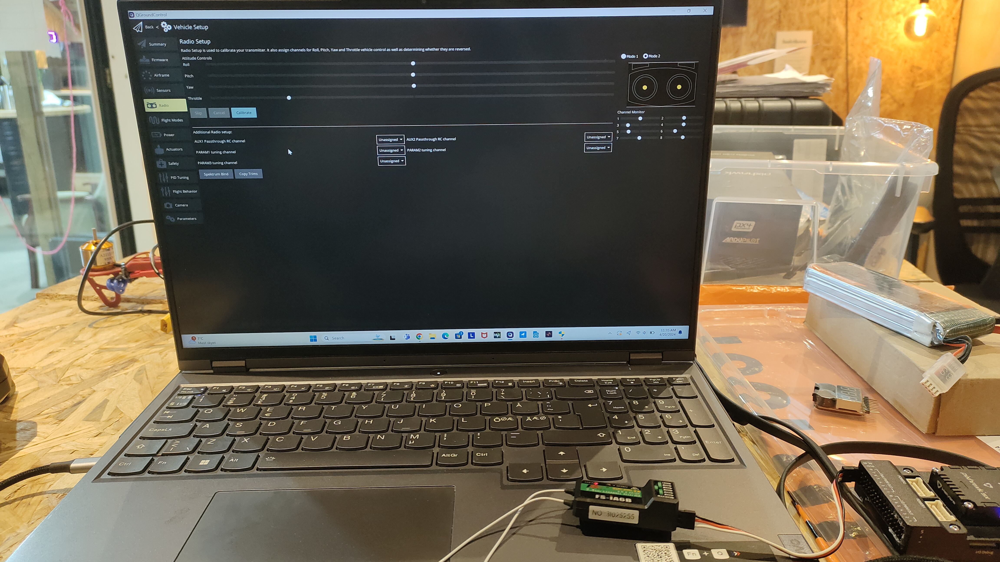
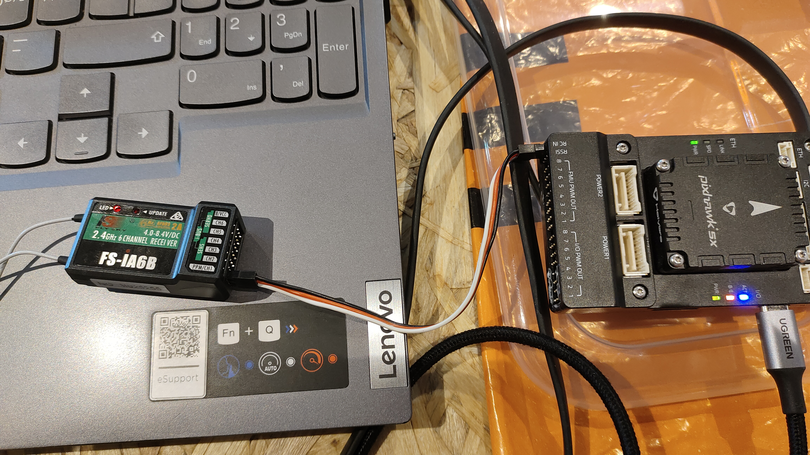
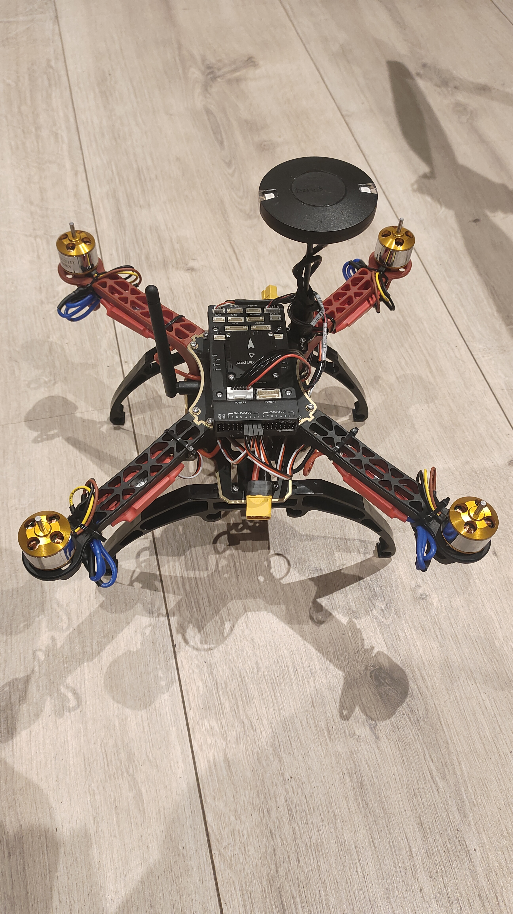

This project covers the complete end-to-end process of building and flight-testing a quadrotor drone from
scratch.
Starting from selecting the right hardware components, through mechanical assembly, flight-controller firmware
configuration,
remote controller binding, GPS setup, full sensor calibration in QGroundControl (QGC), and
finally a successful
outdoor test flight. The workflow follows industry-standard practices used in ArduPilot / PX4 based UAV
development.
🔩 Step 1 — Components
The following hardware was selected for building a stable and responsive quadrotor capable of GPS-assisted
flight:
Component
Specification / Model
Purpose
Frame
F450 / S500 Quadrotor Frame
Structural chassis, 450 mm wheelbase
Flight Controller
Pixhawk 4 / Cube Orange
Autopilot with IMU, barometer, MAVLink
Motors
2212 920KV Brushless Motors (×4)
Propulsion — CW & CCW pairs
ESCs
30A Electronic Speed Controllers (×4)
Motor speed control via PWM
Propellers
1045 (10 inch, 4.5 pitch) — 2 CW + 2 CCW
Thrust generation
Battery
3S / 4S 5200 mAh LiPo
Power supply
Power Distribution Board
PDB with BEC
Distribute power to ESCs and FC
GPS Module
Neo-M8N / Here3 GPS + Compass
Position hold, RTL, waypoint missions
RC Receiver
FrSky X8R / FlySky FS-iA10B
Receive RC commands from transmitter
RC Transmitter
FrSky Taranis X9D / FlySky FS-i6X (10ch)
Manual pilot control
Telemetry Radio
SiK 915 MHz / 433 MHz (×2)
GCS ↔ drone MAVLink link
Companion Computer (Optional)
Raspberry Pi 4
ROS2 / onboard processing
🛠 Step 2 — Assembly
Assembly was performed in a systematic order to ensure clean wiring and structural rigidity:
2.1 — Frame Assembly
Mount the four arms onto the central frame plate using M3 bolts. Identify motor positions: two front (CW),
two rear (CCW).
Attach the landing gear legs to the bottom plate for ground clearance.
Route motor wires through the arm channels to keep wiring clean and protected.
2.2 — Motor & ESC Mounting
Bolt each 2212 920KV brushless motor to the tip of each arm using M3 screws.
Mount one 30A ESC on each arm using zip ties or velcro. Keep ESCs away from motor heat.
Connect motor phase wires (3-wire) to ESC output. Note: motor direction will be verified and corrected in
QGC.
Connect ESC power leads (red & black) to the Power Distribution Board (PDB).
2.3 — Power Distribution Board (PDB)
Solder all four ESC power pairs to the PDB pads. Observe polarity — red to +, black to −.
Solder the main battery XT60 connector to the PDB input.
Take a regulated 5V BEC output from the PDB to power the Pixhawk.
2.4 — Flight Controller Mounting
Mount Pixhawk 4 in the center of the frame using anti-vibration foam pads. Arrow on Pixhawk
must face the drone's front.
Connect ESC signal wires (PWM) to Pixhawk's MAIN OUT ports: Motor 1 → MAIN 1, Motor 2 → MAIN 2, Motor 3 →
MAIN 3, Motor 4 → MAIN 4.
Connect the 5V BEC power to the Pixhawk power module port.
2.5 — Propeller Mounting
Attach CW propellers (standard thread) on motors 1 & 3 (front-right and rear-left).
Attach CCW propellers (reverse thread) on motors 2 & 4 (front-left and rear-right).
Important: Do NOT mount propellers until all ESC direction checks are completed safely in
QGC.
⚙️ Step 3 — QGroundControl (QGC) Setup & Motor Configuration
QGroundControl (QGC) is the ground control station used to configure the Pixhawk, verify
actuators,
and monitor telemetry. Connect the Pixhawk to the laptop via USB and open QGC.
3.1 — Firmware Flash
In QGC: Vehicle Setup → Firmware. Select ArduPilot or PX4 and
flash the latest stable release for quadrotor.
After flashing, QGC will reboot the Pixhawk and auto-detect the frame type.
3.2 — Airframe Selection
Go to Vehicle Setup → Airframe.
Select Quadrotor X configuration (X-frame layout). Apply & restart.
3.3 — Motor Test & Direction Verification
Go to Vehicle Setup → Motors (with props OFF and battery connected).
Slide each motor slider individually and verify each physical motor spins correctly.
If a motor spins in the wrong direction, swap any two of its three ESC-to-motor phase wires to reverse it.
Verify the standard ArduPilot quadrotor X spin pattern:
Motor 1 (Front-Right) — CCW
Motor 2 (Rear-Left) — CCW
Motor 3 (Front-Left) — CW
Motor 4 (Rear-Right) — CW
3.4 — ESC Calibration
In QGC: Vehicle Setup → Power → ESC Calibration.
Follow the wizard: disconnect battery, click calibrate, reconnect battery when prompted. Listen for ESC
tones confirming min/max throttle registration.
This ensures all ESCs respond identically to the same throttle input.

QGroundControl — Radio Setup screen with
FlySky FS-iA6B receiver and Pixhawk 5X connected
🎮 Step 4 — Remote Controller Setup
4.1 — Bind Receiver to Transmitter
For FrSky: Hold the bind button on X8R receiver, power on, then enter bind mode on Taranis.
Release when solid LED appears.
For FlySky: Hold BIND on FS-iA10B, power the drone, then enter bind on FS-i6X transmitter.
Confirm solid LED on receiver indicating successful bind.
4.2 — RC Calibration in QGC
Connect receiver signal to Pixhawk RC IN port (SBUS or PPM).
Go to Vehicle Setup → Radio in QGC. Click Calibrate.
Move all sticks and switches through their full range when prompted. QGC captures min, max, and trim values.
Assign at least three modes to the 3-position switch on Ch5:
Stabilize — manual with self-levelling
AltHold — barometer-assisted altitude hold
Loiter — GPS position and altitude hold

FlySky FS-iA6B receiver wired to Pixhawk 5X
RC IN port via PPM cable
🛰️ Step 5 — GPS Connection
5.1 — Physical Mounting
Mount the GPS/Compass module on a raised mast at the top-rear of the drone, away from ESCs,
motors, and power wires to reduce magnetic interference.
Ensure the GPS arrow points forward (aligned with Pixhawk's forward arrow).
5.2 — Wiring
Connect GPS UART cable to Pixhawk's GPS1 port.
Connect the compass I2C cable to Pixhawk's I2C port (or it may be combined in a single
cable for modules like Here3).
5.3 — QGC GPS Verification
Go outdoors with a clear sky view. Check QGC status bar for GPS fix icon.
Wait for 3D GPS lock — typically requires ≥6 satellites and HDOP < 2.0.
The home position is automatically set on first GPS lock after arming.

Fully assembled quadrotor — Pixhawk 5X, GPS
mast on top, XT60 battery connector, and landing gear fitted
🧭 Step 6 — Calibration
All calibrations are performed in QGC under Vehicle Setup. Perform them indoors away from metal
structures.
6.1 — Accelerometer Calibration
Go to Sensors → Accelerometer. Click Calibrate.
Place the drone flat on each of its 6 faces (level, nose down, tail down, left side, right side, upside
down) when prompted by QGC. Click OK between each.
This corrects IMU offset and ensures the drone knows its true horizontal level.
6.2 — Compass Calibration
Go to Sensors → Compass. Click Calibrate.
Rotate the drone slowly through all orientations — roll, pitch, and yaw — until all compass spheres fill up
in QGC.
Perform outdoors or in an open space, away from iron structures and electronics. Remove any magnetic tools
nearby.
6.3 — Level Horizon
Place the drone on a flat, level surface.
Go to Sensors → Level Horizon. Click Calibrate to set the neutral pitch/roll reference.
6.4 — Radio & Battery Configuration
Set battery cell count and capacity in Power section. Enable low-battery failsafe (e.g., RTL below
20%).
Enable RC loss failsafe to trigger RTL if signal is lost for >1 second.
✈️ Step 7 — Test Flight
Before the first flight, perform a thorough pre-flight checklist:
7.1 — Pre-Flight Checklist
✅ All calibrations passed (no yellow/red warnings in QGC).
✅ Props securely tightened — CW and CCW correctly placed.
✅ Battery fully charged and XT60 connector firmly plugged in.
✅ RC transmitter powered and linked — all sticks respond in QGC radio screen.
ESC + Brushless Motors: Each ESC converts PWM commands from Pixhawk into motor RPM for all
four propulsion units.
GPS/Compass Module: Provides absolute position (lat/lon/alt) and heading for Loiter, RTL, and
waypoint missions.
FrSky / FlySky RC System: Sends pilot commands on up to 10 channels via SBUS/PPM to Pixhawk
RC input.
Telemetry Radio: MAVLink bidirectional link between Pixhawk and QGC on a ground laptop for
real-time monitoring.
QGroundControl (QGC): Ground control station for firmware flashing, parameter tuning,
calibration, mission planning, and live HUD.
🔭 Future Vision
This build establishes a strong platform for further autonomous capability development:
ROS2 + MAVROS Integration: Run high-level autonomy nodes on a companion Raspberry Pi,
bridging ROS2 topics to Pixhawk via MAVROS.
Autonomous Waypoint Missions: Plan and execute multi-waypoint GPS missions via QGC Mission
Editor or custom ROS2 mission nodes.
Vision-Based Navigation: Integrate a downward-facing camera with optical flow for GPS-denied
indoor position hold.
Object Detection Payload: Mount a Jetson Nano with a camera for real-time YOLO-based aerial
surveillance and inspection tasks.
Conclusion
By following a structured build process — from component selection and mechanical assembly through ESC wiring, QGC
firmware and motor configuration,
RC binding, GPS integration, and full sensor calibration — the quadrotor was successfully assembled and
flight-tested.
The drone demonstrated stable hover, responsive manual control, and reliable GPS-assisted autonomous modes
including Loiter and RTL.
This project provides a solid, extensible hardware foundation ready for advanced autonomy research using ROS2,
computer vision, and
custom mission planning.